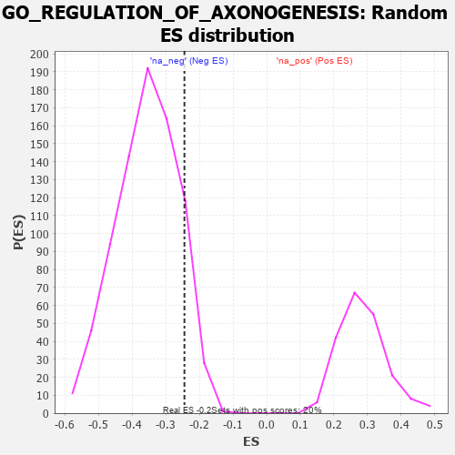

| | | Dataset | 7d |
| Phenotype | NoPhenotypeAvailable |
| Upregulated in class | na_neg |
| GeneSet | GO_REGULATION_OF_AXONOGENESIS |
| Enrichment Score (ES) | -0.2446284 |
| Normalized Enrichment Score (NES) | -0.6877558 |
| Nominal p-value | 0.89460474 |
| FDR q-value | 1.0 |
| FWER p-Value | 1.0 |
Table: GSEA Results Summary
 Fig 1: Enrichment plot: GO_REGULATION_OF_AXONOGENESIS
Fig 1: Enrichment plot: GO_REGULATION_OF_AXONOGENESIS
Profile of the Running ES Score & Positions of GeneSet Members on the Rank Ordered List
| PROBE | GENE SYMBOL | GENE_TITLE | RANK IN GENE LIST | RANK METRIC SCORE | RUNNING ES | CORE ENRICHMENT | | 1 | SHOX2 | | | 288 | 0.842 | 0.0200 | No |
| 2 | LRP1 | | | 470 | 0.648 | 0.0405 | No |
| 3 | SRF | | | 542 | 0.615 | 0.0726 | No |
| 4 | WDR36 | | | 1260 | 0.437 | 0.0114 | No |
| 5 | IFRD1 | | | 1486 | 0.392 | 0.0092 | No |
| 6 | RNF6 | | | 1605 | 0.373 | 0.0192 | No |
| 7 | TRAK1 | | | 1714 | 0.354 | 0.0292 | No |
| 8 | PAK3 | | | 1889 | 0.322 | 0.0288 | No |
| 9 | BRSK2 | | | 1979 | 0.308 | 0.0381 | No |
| 10 | ISLR2 | | | 2124 | 0.287 | 0.0392 | No |
| 11 | SIN3A | | | 2361 | 0.251 | 0.0262 | No |
| 12 | DSCAM | | | 2689 | 0.200 | -0.0017 | No |
| 13 | SLIT2 | | | 2724 | 0.195 | 0.0071 | No |
| 14 | MAP2 | | | 3074 | 0.140 | -0.0276 | No |
| 15 | CDK5 | | | 3480 | 0.080 | -0.0732 | No |
| 16 | STK25 | | | 3602 | 0.059 | -0.0845 | No |
| 17 | ROBO2 | | | 4066 | -0.018 | -0.1417 | No |
| 18 | ABL1 | | | 4125 | -0.027 | -0.1472 | No |
| 19 | ILK | | | 4510 | -0.096 | -0.1892 | No |
| 20 | NTRK2 | | | 4543 | -0.104 | -0.1863 | No |
| 21 | RAB21 | | | 4620 | -0.122 | -0.1877 | No |
| 22 | LIMK1 | | | 4684 | -0.136 | -0.1866 | No |
| 23 | RTN4 | | | 4783 | -0.154 | -0.1886 | No |
| 24 | MARK2 | | | 4899 | -0.177 | -0.1913 | No |
| 25 | PTEN | | | 5262 | -0.261 | -0.2195 | Yes |
| 26 | EPHA4 | | | 5273 | -0.265 | -0.2030 | Yes |
| 27 | GRIN1 | | | 5381 | -0.291 | -0.1971 | Yes |
| 28 | IST1 | | | 5442 | -0.305 | -0.1843 | Yes |
| 29 | STK11 | | | 5922 | -0.443 | -0.2151 | Yes |
| 30 | DBNL | | | 6084 | -0.501 | -0.2019 | Yes |
| 31 | FEZF2 | | | 6150 | -0.519 | -0.1754 | Yes |
| 32 | CDKL3 | | | 6401 | -0.618 | -0.1657 | Yes |
| 33 | ROBO1 | | | 6577 | -0.699 | -0.1411 | Yes |
| 34 | PTPRS | | | 6646 | -0.738 | -0.1003 | Yes |
| 35 | PAK1 | | | 6691 | -0.757 | -0.0554 | Yes |
| 36 | GSK3B | | | 6719 | -0.768 | -0.0074 | Yes |
| 37 | RYK | | | 7102 | -1.000 | 0.0112 | Yes |
| 38 | DCC | | | 7550 | -1.470 | 0.0531 | Yes |
Table: GSEA details [plain text format]

Fig 2: GO_REGULATION_OF_AXONOGENESIS: Random ES distribution
Gene set null distribution of ES for GO_REGULATION_OF_AXONOGENESIS